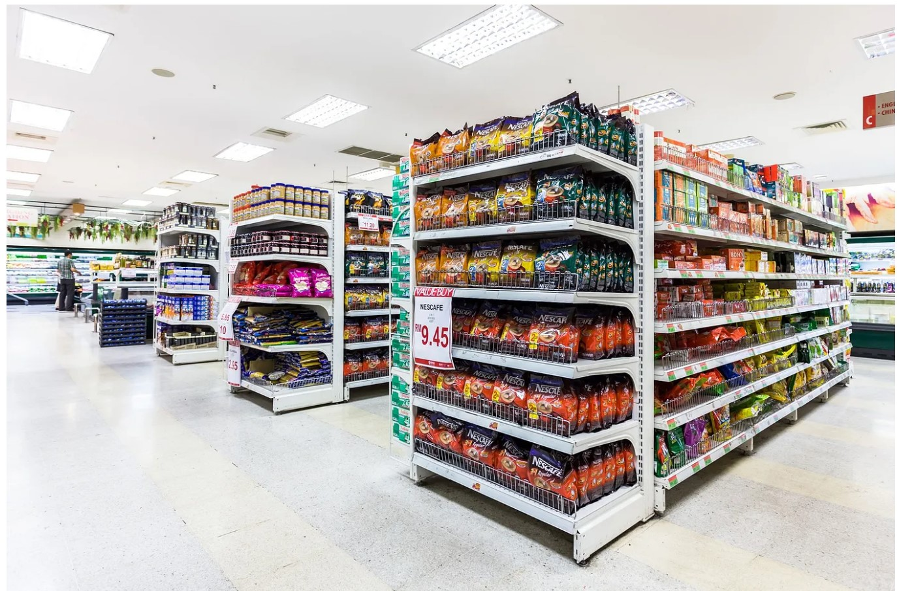
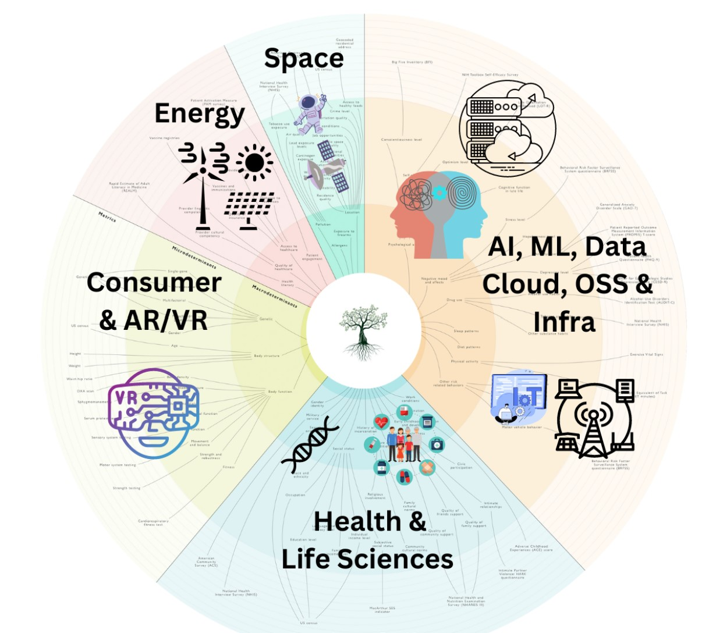

Aim of Project
I utilized the dataset to guide Techtronix Innovations in overcoming its current obstacles through the creation of an automated Power BI
report. This report should focus on:
1. Sales Performance Analysis: Uncover sales trends across various product categories, sectors, regions, and timeframes. Highlight the best and
worst performers.
2. Customer Insights: Dive into customer segmentation to reveal purchase patterns, preferences by sector, and geographic distribution. Identify
the sectors contributing most significantly to sales and profitability.
3. Inventory Optimization: Evaluate inventory management against sales figures to pinpoint production planning mismatches. Propose methods
to better align production with market demands.
4. Profitability Analysis: Analyze the profitability across different product categories, taking into account sales revenue and production costs.
Point out products with high margins and suggest cost reduction strategies.
5. Market Expansion Opportunities: Analyze sales and customer data to discover new markets for expansion, emphasizing regions and sectors
with untapped potentia.
This analysis was performed using Power BI.

Use your data analysis skills to study the pattern of promotion. With this insight, stake holder can understand the important features among available features that can be used to recommend promotion eligibility. This analysis was performed using Python.
After analysis,only 8.5% have received promotions and I also findout that Staffs who attended training more than 10 times scored below 8 points in performance ,failed to meet targets, and were not promoted, indicating potential ineffectiveness of excessive training.
Evaluate the effectiveness of training programs and adjust them as necessary to ensure employees can apply the knowledge gained effectively in their roles.Features like Targets met,Previous_Award,Trainingscoreaverage and LastPerformanceScore.This analysis helped the organization promotion rate to 25%
.More than two machine Learning models were used to predict staff promotion with minimum accuracy of 89%

Aim of Project
Look at how users behave and what they say to find out what needs to
be better.Make Checkout Better: Make it easier and quicker for users to buy things.
Suggest Personalized Products: Use what we know about what users like to suggest other
things they might buy.Get Users to Buy More: Figure out ways to encourage users to spend more money.
This analysis was performed using Microsoft Excel.
The objective of this report is to analyze Olive Ventures' sales and customer data to gain
insights into business performance, customer behavior, and product trends. By leveraging
data analytics, Olive Ventures aims to optimize operations, enhance customer satisfaction,
and drive revenue growth.
As a data analyst, your role will be to help Olive Ventures identify key areas for improvement
and strategic opportunities for business expansion
Objectives of the Case Study
● Analyze sales and customer data to gain insights into business performance.
● Understand customer behavior and preferences.
● Identify trends in product sales and supply chain efficiency.
● Provide actionable insights and recommendations to optimize operations.
This analysis was performed using Power BI.

For other in depth anlysis with python and Machine Learning Models Projects .
These are data ranging from sport,Security,Education,Sales
Customer Churn rate,Fashion and Health sector.
Trade-Goals
is known for its innovative approach to retail and for
consistently pushing the boundaries of what's possible
with data. I am to review the performance of the
company from 2014- 2017 and plan for the future.
1. Segment Analysis
You’ll analyze and visualize how does each
customer segment contributes to sales and
profit. What insights can you draw from the
distribution of sales and profit across these
segments?
2. Product Category Analysis
Imagine you’re a detective investigating which
products are the stars of the show. By diving into
sales and profit data across various product
categories and sub-categories, you'll uncover the
top performers. What patterns do you notice
about the best-selling categories?
3. Month-on-Month Profit Analysis
Think of tracking your fitness progress over
time. How does the company’s financial health
fluctuate throughout the year?
4. Sales by State
Identify the states with the highest sales. What
geographic trends can you spot?
5. Segment by Quantity
Consider this like inventory day. How do different
segments vary in terms of product quantity sold?
6. KPI Cards
Finally, it’s time to create the report cards for the
company. You’ll calculate total transactions, total
discount, total sales, total profit, and total quantity,
and then create KPI cards to summarize these key
performance indicators. What overall story do these
KPIs tell about the company’s performance?
This analysis was performed using Microsoft Excel.

Problem Statement
City Hospital lacked a centralized view of their financial
performance. This made it difficult to identify trends,
optimize resource allocation, and make data-driven
decisions.
Calculate the total revenue, expenses and profit cumulated
by the hospital over time.
What is the profit margin generated by the hospital?
How many Doctors and Patients does the hospital have on
record?
What is the trend of revenue generation over the given time
period?
Which Specialties yielded the highest and the lowest revenue ?
How much revenue those each procedure category make in
this hospital?
Looking at each procedure in the hospital, what is the total
revenue, expenses and profit margin and in how many
transactions was this achieved?
Who are the top revenue generating doctor in the hospital?
Who are the top 5 patients that impacted on Revenue generation?
How many doctors are in each specialty and how many patients
patronize each of these specialties?
What is the trend of patients visits to the hospital over time?
By gender description give a the total no. of Doctors and patients in
the hospital.
This analysis was performed using Power BI.